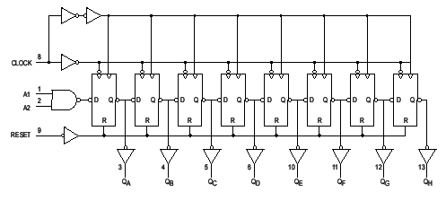
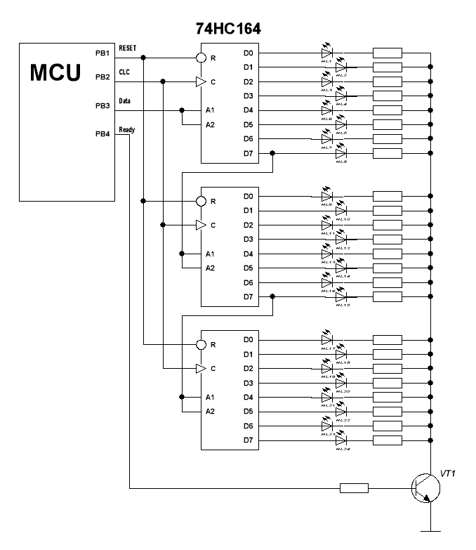

- Электроника для всех - http://easyelectronics.ru -
Сдвиговый регистр
Автор DI HALT дата: 13 марта 2009 @ 18:27 в Начинающим | 71 комментариев
Иногда требуется ОЧЕНЬ много выходных портов. Особенно если хотим сделать что нибудь на светодиодах. Гирлянду какую-нибудь навороченную. Что делать? Брать под это дело ATMega128 с ее полусотней выводов? Избыточно — для ламеров. Ставить i2с расширитель портов? Дорого. Для мажоров. Тут на помощь из вековых глубин выплывает старая добрая дискретная логика. На этот раз нас выручит грошовый сдвиговый регистр. Возьму, для примера, 74HC164 он же, для любителей совковых трешевых микросхем в неубиваемом каменном корпусе, наш КM555ИР8.
|  |
У него есть 8 выходов и четыре входа. R-сброс, С-тактовый, А1 и А2
вход. На самом деле, внутри они заведены через логический элемент 2И-НЕ и
идут на D триггеры. D — это такой тип триггера, который по тактовому
импульсу схватывает и отправляет на выход то, что у него на входе. Как
видишь, тут они цепью стоят ,передавая бит от одного к другому и нет
принципиальной разницы сколько их тут будет, восемь штук или восемь
миллиардов. Но чем больше, тем дольше по этой эстафете гнать данные до
конца. Поэтому мы смело можем эти регистры соединять последовательно.
Получается вот такая схема:
|  |
От МК, как видно, требуется только четыре выхода. Одним (RESET) мы
сбрасываем состояние регистра. Из второго (Data) побитно вылазит байтик,
а тактовый CLC обеспечивает продвижение битов по регистру. Самих
регистров тут три. Они сцеплены паровозом. Когда переполняется первый,
то биты из него вылазят во второй, потом в третий. Итого, 24 вывода.
Катоды диодов подключены все вместе через транзистор и как только будет слово мы подаем сигнал Ready и зажигаем всю эту ботву.
Наполнять регистр просто:
1) Поднимаем и держим RESET в 1
2) Выдаем первый (старший) бит на Data.
3) Опускаем в 0 и поднимаем в 1 тактовый выход. На восходящем фронте
происходит занос в регистр и сдвиг всей цепочки на один шаг.
4) Повторить со второго пункта пока все биты не выдадим.
А для сброса достаточно уронить Reset в ноль на пару микросекунд.
Все просто :)
З.Ы.
Кружок на входе регистра означает, что вход инверсный. Т.е. подал ноль - сработало
Треугольник на входе показывает по какому фронту произойдет
срабатывание. Запомнить просто: _/ \_ — это, типа, импульс. А
треугольник, как стрелочка, указывает на нужный фронт. ->_/ \_
передний (восходящий фронт) и _/ \_<- задний (нисходящий фронт)
Ну и [1] даташитик напоследок, а еще [2] протеусовская модель, где можно вручную переключателем поперетыкать уровень на входе и потыкать кнопку тактового входа. Правда я там поленился на диоды питание заводить — там по квадратикам логических уровней итак все видно хорошо :)
Статья распечатана с Электроника для всех: http://easyelectronics.ru
URL статьи: http://easyelectronics.ru/sdvigovyj-registr.html
URL-ы в этой записи:
[1] даташитик: http://easyelectronics.ru/datasheet/74HC164.pdf
[2] протеусовская модель: http://easyelectronics.ru/datasheet/LS.DSN
Нажмите здесь для печати.
Copyright © 2009 Электроника для всех. All rights reserved.